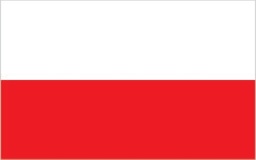

Background
Poland's history as a state began near the middle of the 10th century. By the mid-16th century, the Polish-Lithuanian Commonwealth ruled a vast tract of land in Central and Eastern Europe. During the 18th century, internal disorders weakened the nation, and in a series of agreements between 1772 and 1795, Russia, Prussia, and Austria partitioned Poland among themselves.
Poland regained its independence in 1918 only to be overrun by Germany and the Soviet Union in World War II. It became a Soviet satellite state following the war. Labor turmoil in 1980 led to the formation of the independent trade union "Solidarity" that over time became a political force with over 10 million members. Free elections in 1989 and 1990 won Solidarity control of the parliament and the presidency, bringing the communist era to a close.
A "shock therapy" program during the early 1990s enabled the country to transform its economy into one of the most robust in Central Europe. Poland joined NATO in 1999 and the EU in 2004. With its transformation to a democratic, market-oriented country largely completed and with large investments in defense, energy, and other infrastructure, Poland is an increasingly active member of Euro-Atlantic organizations.